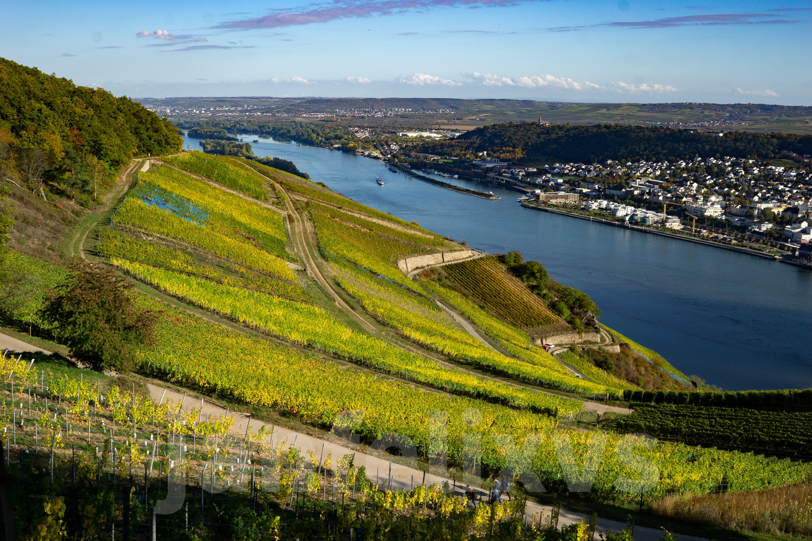
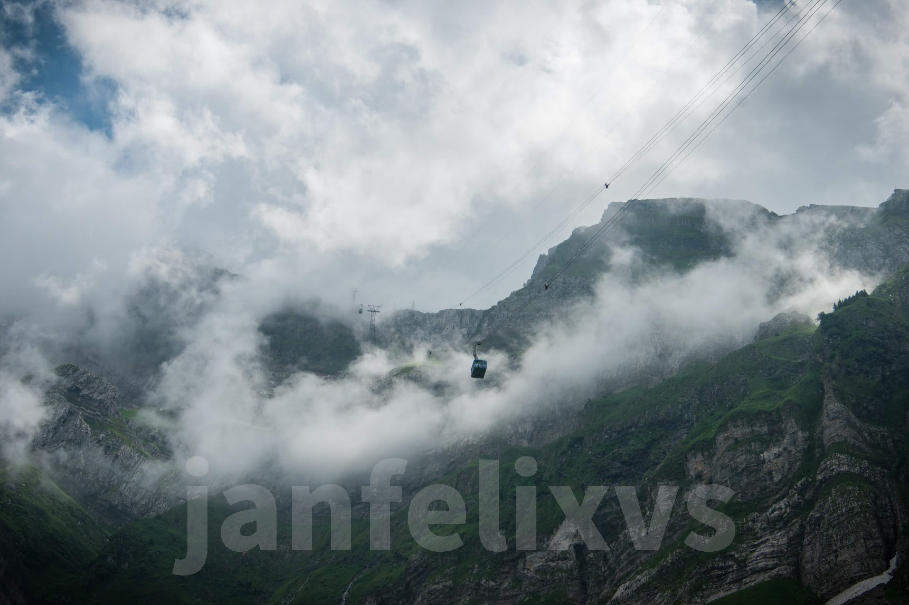
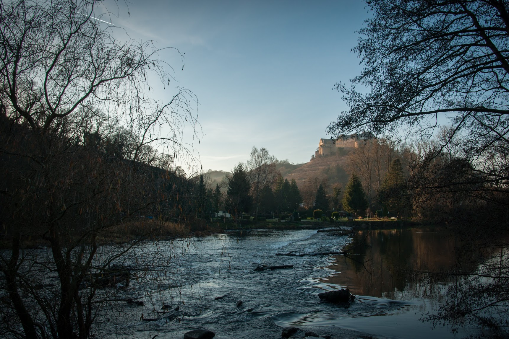
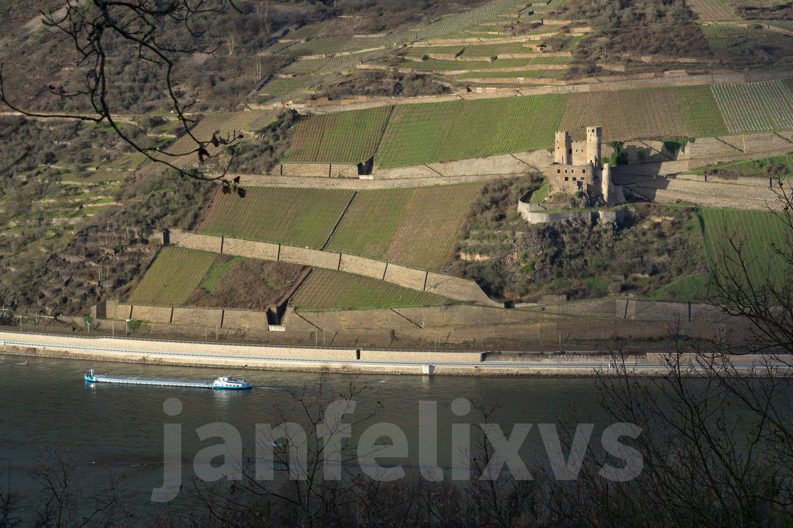
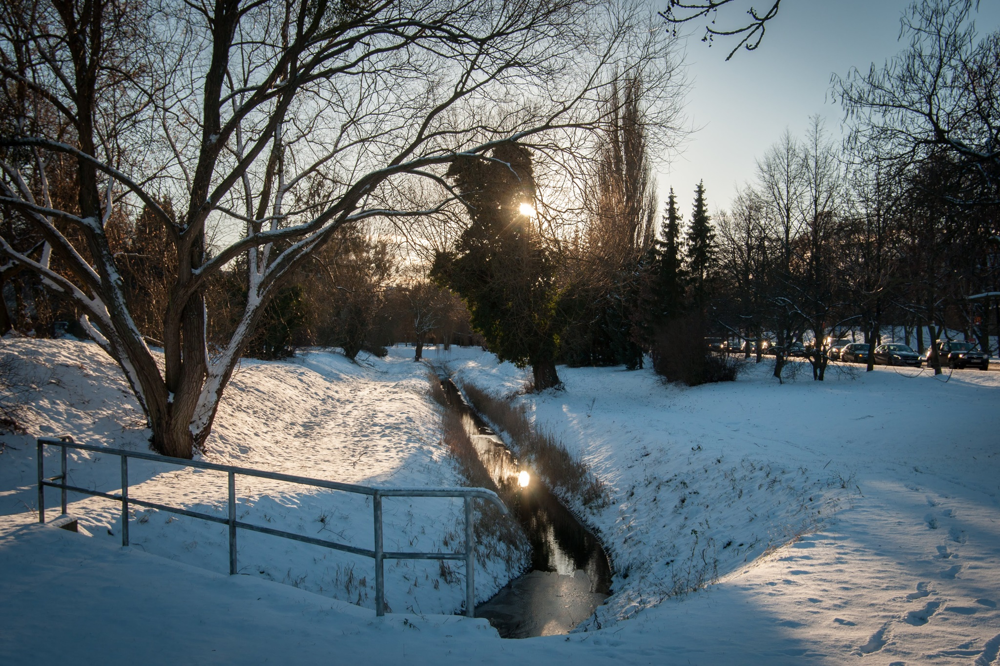
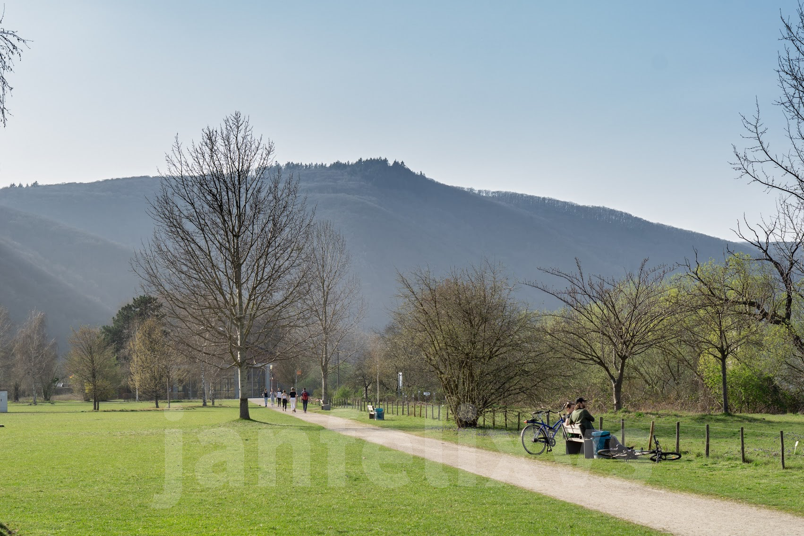
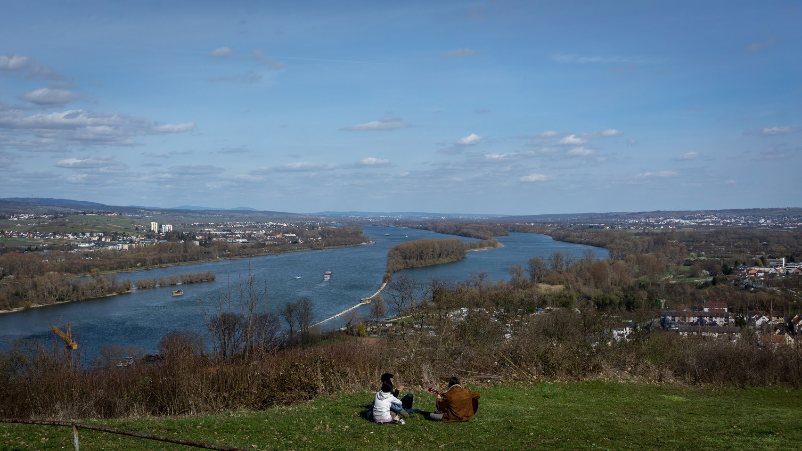
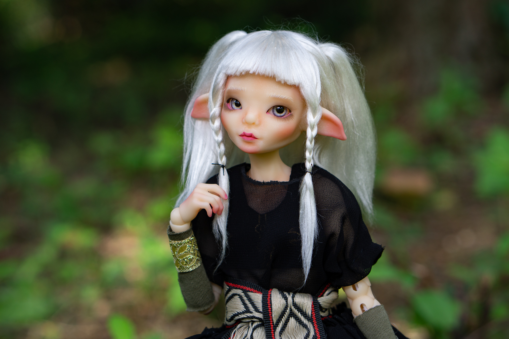
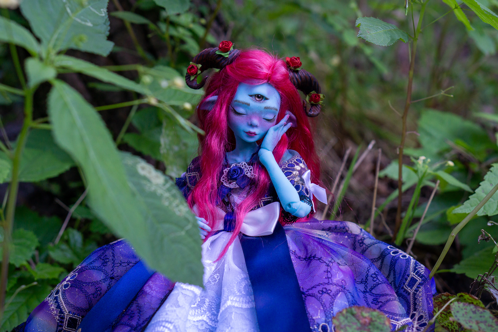

photography
Portraits will be added in the future.
my equipment
- Sony Alpha 6000
- Sony SEL-P1650 Kit Objective (Not in use)
- Sony SEL-28F20 Wide Angle Lens
- Sony SEL-50F18 Portrait Lens (Favourite)
- Sony SEL-55210 Telephoto Zoom Lens (Not in use)
a few photos of mine
landscapes and nature
I love to be in nature. It's magical.
      doll photo shootings
The dolls are made by the talented Merve (➜ merviaartdolls.com).We had a wonderful time photographing the dolls together.  ➜ her Instagram post (16/08/2021)  ➜her Instagram post (18/10/2021)